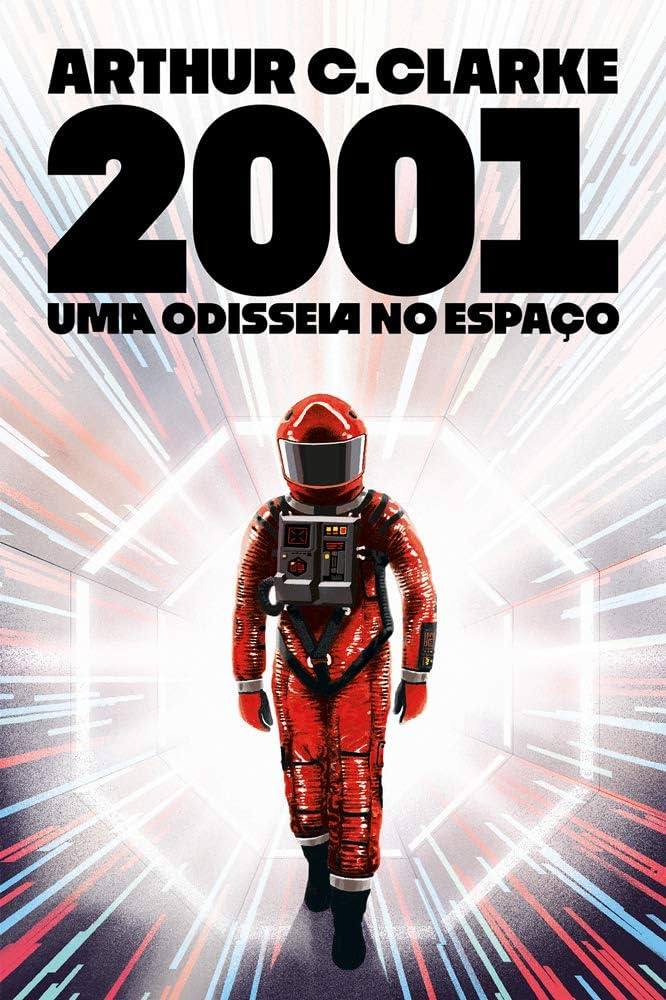

Atividade: sugestões de filmes
Considerado a obra-prima do gênio cinematográfico, o longa-metragem foi aclamado pela crítica e pelo público.
Bastante diferente das produções da época, o clássico acabou se tornando um filme cult e uma grande referência, continuando popular ao longo das décadas.
“Lenda do Lobo” é uma ótima introdução para o mundo fantástico repleto de monstros, magia e destino da franquia “The Witcher”. Trazendo uma atmosfera que mistura elementos políticos e morais consegue ser sombrio e sangrento, mas também complicado e sentimental. A história é atraente e emocionante, capaz de trabalhar as diferentes perspectivas em torno dos bruxos. É claro, que como protagonista Vesemir é principalmente o nosso “personagem ponto de vista”, mas também o público aprende informações importantes sobre os bruxos pelo olhar de outros personagens. Há Tetra, uma feiticeira que enxerga os bruxos de uma forma muito pessoal e negativa, em contrapartida a visão da Lady Illyana que já conhecia Vesemir antes dele se tornar um bruxo. Além é claro dos camponeses que olham para os bruxos com medo e reverência.

No primeiro livro da trilogia, o hobbit Frodo Baggins ganha o poderoso Anel de Sauron (também chamado de Um Anel) de seu primo Bilbo.
A partir daí, ele é enviado em uma missão para destruir a joia com seu jardineiro Sam e seus primos Merry e Pippin.
É Gandalf, o Cinzento que os envia, pois sabe a verdadeira origem do anel.
Quando o mago descobre que o seu líder Saruman, o Branco se juntou às forças de Sauron, ele cria a Sociedade do Anel com representação de várias raças da Terra-Média de forma a vencer as forças do mal.
Os membros da Sociedade do Anel se separam. Enquanto Frodo e Sam seguem caminho para Mordor na companhia de Gollum, Gandalf e os restantes combatem os exércitos de orcs de Saruman no Abismo de Helm.
No capítulo final da trilogia, Sam, Frodo e Gollum fazem a investida final que permitirá a destruição do Um Anel na Montanha da Perdição. Enquanto isso, os restantes travam a batalha épica por Gondor contra as forças de Sauron.
TPublicado em 1937 como uma história para crianças, O Hobbit é, na verdade, uma prequela da trilogia Senhor dos Anéis.
Aqui é contada a aventura de Bilbo Baggins junto com o mago Gandalf, o Cinzento e treze Anões que tentam roubar o tesouro do dragão Smaug.
É durante esta viagem que Bilbo encontra a criatura de nome Gollum e fica com o Um Anel em sua posse.
Tudo começa (e continua) com dois caras trancados em um banheiro: um tem que matar o outro para manter sua família viva.
Já tem um cara aparentemente morto no chão. Paralelamente, policiais tentam rastrear o assassino a partir do depoimento da única sobrevivente do Jigsaw, que a gente acaba nem prestando muita atenção. Rolam pernas serradas e o Danny Glover interpretando um policial.
O plot twist é que o cara morto no chão do banheiro era o próprio Jigsaw (Tobin Bell), o que desgraça a cabeça de todo mundo. Porém, o mistério sobre o assassino — Quem é? Onde vive? Do que se alimenta? — permanece, o que dá um bom combustível para os próximos.